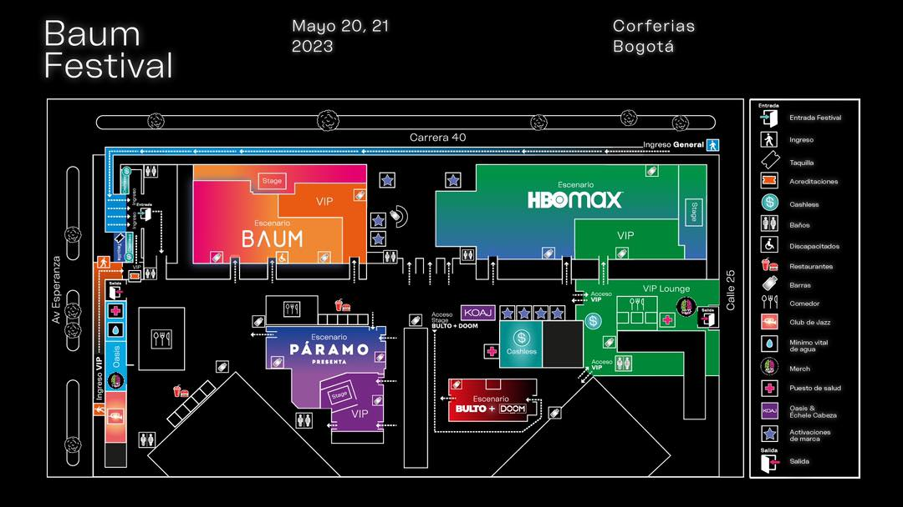

🎛️ Baum Festival Stage Organizer
🎛️ Baum 11
Baum 11 · Corferias, Bogotá · 22–23 mayo 2026
Vie 22 mayo
Sáb 23 mayo
⏳
00d 00h 00m 00s
●
sin exportar
🌓
Tema
⬅
Panel
🕒
Modo ruta
⬆
Importar
⬇
JSON
📅
Calendario
📷
Grilla PNG
📱
Stories
🗺️
Mapa
🚩
Mi ruta PNG
🕒 Modo ruta activo — toca celdas de la grilla para marcar tu recorrido. Se numeran en orden cronológico; toca de nuevo para quitar una parada.
＋
0
sin asignar
×
